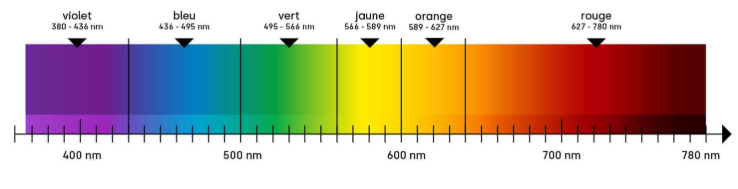
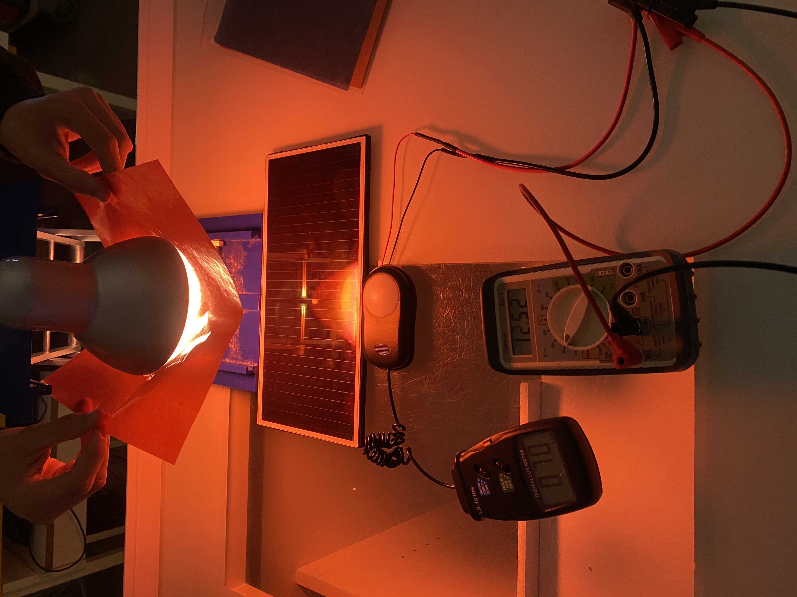

Problématique
Comment la couleur de la lumière incidente influence-t-elle l'éclairement et donc la tension produite ?
Hypothèse
On suppose que la tension produite varie selon la longueur d’onde de la lumière reçue. Les photons de courte longueur d’onde, comme ceux de la lumière bleue, possèdent davantage d’énergie que les photons de grande longueur d’onde, comme ceux de la lumière rouge. Cependant, la tension mesurée dépend également de la réponse spectrale de la cellule et de la quantité de lumière transmise par chaque filtre.
Matériel
- Un multimètre
- Un panneau photovoltaïque
- Un luxmètre
- Une lampe (type : incandescente)
- Une salle obscure
- Des films transparents colorés
Protocole expérimental
01 Mise en place
- Placer la cellule face à la lampe, à distance et inclinaison fixes.
- Connecter la cellule au multimètre.
- Placer le luxmètre à proximité de la cellule.
- Relever la tension initiale sans filtre et mesurer l’éclairement.
02 Mesures avec les filtres colorés
- Placer successivement chaque filtre coloré devant la lampe.
- Pour chaque filtre, mesurer la tension aux bornes de la résistance.
- Relever également l’éclairement indiqué par le luxmètre.
- Répéter les mesures plusieurs fois pour chaque couleur.
- Conserver les mêmes conditions expérimentales.
03 Comparaison des résultats
- Comparer les tensions obtenues avec les différents filtres.
- Associer chaque couleur à une longueur d’onde approximative.
- Comparer les résultats à l’hypothèse de départ.
- Prendre en compte le fait que les filtres ne transmettent pas tous la même quantité de lumière.
Données expérimentales
Tableau de mesures
| Couleur du filtre | Longueur d’onde approx. (nm) | Éclairement (lux) | Tension (V) |
|---|---|---|---|
| Sans filtre | 400 – 700 | 411 | 16.01 |
| Rouge | 620 – 700 | 122 | 12.36 |
| Orange | 590 – 620 | 200 | 14.05 |
| Jaune | 570 – 590 | 297 | 15.18 |
| Vert | 495 – 570 | 275 | 15.03 |
| Bleu | 450 – 495 | 87 | 10.30 |

Relation scientifique
L’énergie d’un photon est inversement proportionnelle à sa longueur d’onde.
Analyse des résultats
Résultat et conclusion
Ces résultats montrent plusieurs choses intéressantes.
Premièrement, la tension et l’éclairement sont maximaux pour la lumière sans filtre.
Sans filtre, la cellule produit 16,01 V. Chaque filtre fait baisser la tension, de 5,2 % pour le jaune à 35,7 % pour le bleu : la couleur de la lumière a donc bien une influence.
Le classement des tensions (jaune > vert > orange > rouge > bleu) est donc exactement celui des éclairements (297 > 275 > 200 > 122 > 87 lux).
La tension dépend donc surtout de la quantité de lumière reçue par la cellule.
Ensuite, un photon bleu (450 nm) a plus d’énergie qu’un photon rouge (700 nm). Avec la formule E = h × c / λ,
on obtient pour le bleu E = 6,63×10⁻³⁴ × 3,00×10⁸ / 450×10⁻⁹ = 4,42×10⁻¹⁹ J, soit 2,76 eV,
contre 2,84×10⁻¹⁹ J, soit 1,78 eV, pour le rouge.
Pourtant, le filtre bleu produit seulement 10,30 V alors que le filtre rouge produit 12,36 V.
La tension ne dépend donc pas seulement de l’énergie d’un photon mais surtout de la quantité de lumière reçue par la cellule.
Ce qui confirme que d’autres facteurs interviennent, comme prévu dans notre hypothèse.
Approfondissement des résultats
Ouverture
Comment expliquer le résultat du bleu ?
Avec E = hc / λ, un photon bleu (450 nm) a environ 2,76 eV contre 1,8 eV pour un photon rouge (700 nm).
Mais dans une cellule en silicium, un photon libère un seul électron dès que son énergie dépasse environ 1,1 eV ; le surplus est perdu en chaleur. "limite de Shockley-Queisser"
Ce qui compte, c'est donc le nombre de photons absorbés, pas l'énergie de chacun.
De plus, d’une part, le filtre bleu laisse passer moins de lumière et la lampe émet probablement moins de bleu car c'est une lampe incandescente, donc il arrive moins de photons sur le panneau.
D’autre part, le panneau en silicium est plus efficace avec la lumière rouge qu’avec la lumière bleue.
On peut donc conclure que la tension dépend du nombre de photons reçus et de l’efficacité du panneau pour ces longueurs d'onde
(réponse spectrale),
pas seulement de l’énergie de chaque photon.
Pour une prochaine fois :
Limites de l'expérience
Comment aurions-nous pu améliorer l'expérience ?
- Pour aller plus loin, on pourrait utiliser des LED de couleur pour ne plus dépendre des filtres car ils laissent passer des plages de longueurs d'onde et non pas des valeurs précises.
- Tester un autre type de panneau pour comparer les résultats.
- On aurait pu chercher non pas la tension à vide mais la puissance,
sinon on ne peut pas parler de « meilleur rendement » : la puissance (U × I) serait plus pertinente. - Le luxmètre est calibré pour l’œil humain (sensible au jaune-vert), pas pour la cellule : les lux sont peu fiables pour comparer des couleurs.
- La cellule chauffe sous la lampe, et il y a peu de mesures par filtre.

lien bonus !!!!